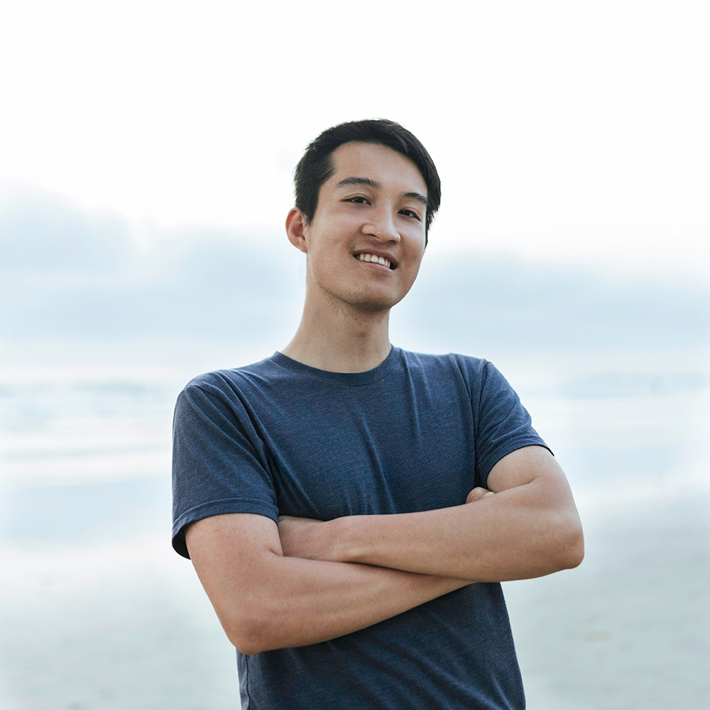

Hi! I’m a student at UC Berkeley majoring in computer science. I have more than six years of programming experience, whether it be internship experience, research projects, or curious experiments. I am also looking for FTE roles for summer 2021!
I am a research assistant at
AutoLab (Berkeley AI Research), a project manager/machine learning developer at Cal Launchpad, and vice president at Upsilon Pi Epsilon.
I was a software engineering intern at Microsoft during summer 2019 and a software engineering/research intern at
NASA (Ames Research Center) during summer 2018.
If you have any questions or inquiries, feel free to reach me at danielzeng (at) berkeley (dot) edu.
|

|